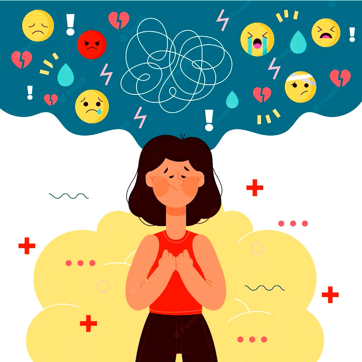

Ansiedad y depresion
son trastornos mentales que pueden afectar la vida de las personas. La ansiedad se caracteriza por un miedo y angustia constante, mientras que la depresión se caracteriza por una tristeza persistente.
"MENTE Y SANA " |
La salud mental es fundamental para la calidad de vida y el bienestar general.
La salud mental es el estado de bienestar emocional, psicológico y social de una persona. Es fundamental para la calidad de vida y la salud general.
Ser consciente de las propias capacidades
Enfrentar las dificultades diarias
Ser productivo en el trabajo
Manejar el estres
Relacionarse con los demas
Tomar decisiones
Trastornos mentales
Un trastorno mental puede ocurrir cuando los cambios en el pensamiento, los sentimientos o el comportamiento alteran la capacidad de funcionamiento de una persona.
Practicar tecnicas de relajación, como la respiración profunda, la relajación progresiva o la biorretroalimentación
Realizar autocuidado
Si necesitas ayudaz
Si estos en crisis o estos pensando en hacerte da, puedes llamar a la Línea 988, la Línea de Prevención del Suicidio y Crisis. También puedes enviar un mensaje de texto al 988 o usar el chat en vivo de 988lifeline.org.
La salud mental es importante en todas las etapas de la vida, desde la ni?ez y la adolescencia hasta la adultez y la vejez.
Consejos para mejorar tu salud mental con ejercicio, alimentación y relajación.
Claro, la actividad física regular puede disminuir el estrés y la depresión. Diversas investigaciones han demostrado que el ejercicio mejora la salud mental, disminuyendo la tensión y potenciando la energía. Se comporta como un remedio natural para la ansiedad, liberando endorfinas que potencian el bienestar. Además, la actividad física puede potenciar los síntomas de depresión o ansiedad, generando un enorme beneficio. Las ventajas son perdurables si se ejercen a largo plazo, por lo que resulta crucial buscar actividades que te hagan disfrutar. Incluir actividad física en el día a día puede ser una táctica eficaz para potenciar la salud mental.

Sí, dormir lo suficiente tiene un impacto positivo en el estado de ánimo y la salud mental en general. Un sueño adecuado ayuda a regular las emociones, mejorar la resiliencia emocional y promover una actitud más positiva hacia la vida. Además, contribuye a una mejor concentración, claridad mental y capacidad para manejar el estrés y la ansiedad.


Una dieta equilibrada, rica en nutrientes esenciales, desempeña un papel crucial en la salud cerebral y emocional.Asimismo, dietas que priorizan alimentos naturales y no procesados, como la dieta mediterránea, han demostrado ser beneficiosas para la salud mental. Este patrón alimenticio incluye frutas, verduras, pescado y aceite de oliva, proporcionando nutrientes esenciales que favorecen el bienestar emocional.


Incorporar estas prácticas en tu rutina diaria puede ser una estrategia efectiva para manejar el estrés y mejorar tu salud mental.


Sí, organizar el tiempo y programar descansos entre tareas es fundamental para evitar la sobrecarga y cuidar tanto la productividad como la salud mental.


Contar con el apoyo de familiares, amigos y compañeros de trabajo en situaciones emocionalmente intensas es fundamental para preservar la salud mental y afrontar el estrés de manera más efectiva.

| Tema | Descripción | Imagen |
|---|---|---|
| Ansiedad |
Puede manifestarse como miedo, preocupación, tensión muscular, bloqueo mental o desmayo. Interfiere en la vida diaria. Tipos: Agorafobia, Trastorno de pánico. Tratamiento: Terapia cognitivo-conductual, medicamentos. |
 |
| Depresión |
Tristeza persistente, desesperanza, frustración, pérdida de interés, fatiga, insomnio. Recomendaciones: Contacto con seres queridos, grupos de apoyo, terapia en línea. |
 |
| Disfrazando síntomas |
Personas ocultan síntomas por miedo al juicio o presión social. Consecuencias: Agotamiento emocional, aislamiento, empeoramiento de síntomas. |
 |
| Domina el Estrés |
Técnicas: Ejercicio, respiración profunda, yoga, alimentación saludable, música relajante. |
 |
| Síntomas de Ansiedad |
Físicos: Palpitaciones, sudoración, mareos, insomnio, problemas digestivos. Emocionales: Preocupación constante, irritabilidad, pensamientos negativos. |
 |
Visita nuestro blog para leer artículos sobre salud mental, técnicas de relajación y bienestar emocional.
son trastornos mentales que pueden afectar la vida de las personas. La ansiedad se caracteriza por un miedo y angustia constante, mientras que la depresión se caracteriza por una tristeza persistente.
El estrés es una respuesta natural del cuerpo a situaciones que son desafiantes, frustrantes o amenazadoras. Puede ser leve y de corto plazo, o m?s extremo y de largo plazo.

Los problemas de salud mental son afecciones que afectan la forma de pensar, el humor y el comportamiento de una persona. Pueden ser ocasionales o de larga duración.

Las relaciones sociales son las interacciones con los demás, mientras que las relaciones de pareja son acuerdos entre dos personas. Ambas pueden ser complejas y estén influenciadas por factores biol?gicos, psicol?gicos, sociales y culturales.

La salud mental de los ni?os y adolescentes es su bienestar emocional, f?sico e integral. Es fundamental para el desarrollo de sus capacidades de pensar, sentir, interactuar y disfrutar de la vida.
Las finanzas personales son la gesti?n de los ingresos y egresos de una persona, as? como la planificaci?n de metas financieras. Son parte fundamental de la vida de cada persona.